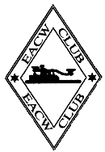

EACW:
EA CW Club
CW club being very active in Spain
and Spanish speaking countries. Membership is free and the club is quite
active on the Internet.
The club was founded by EA4WH Jorge and EA4DXY Vicenta in September of 2001.
To join the club you need to provide evidence that you have contacted a number of Spanish stations in CW. It is not explicitly required to speak Spanish, however, if you wish to contribute actively to the club life at least a reading knowledge of Spanish is recommended.
Secretary:
Vicenta Santos Ropero, EA4DXY
P. O. Box 45
E-13320 Villanueva de los Infantes, Ciudad Real
The president of EACW is
Jorge Arcos Pavon, EA4WH
P. O. Box 45
E-13320 Villanueva de los Infantes, Ciudad Real
Contact person, webmaster, and mailing list administrator is
Tony Herrera Caro, ea3re(at)yahoo.es
Travesera de Montigala , 48 4 A
E-08917 Badalona, Barcelona